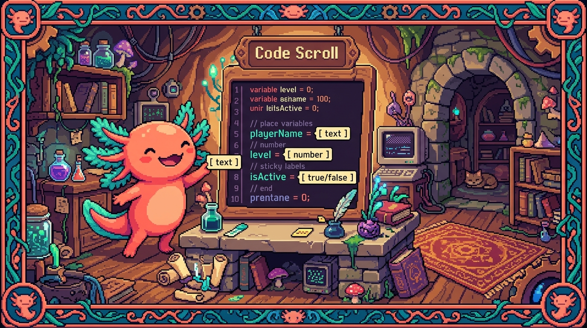

Capítulo 02 — Tipos básicos y anotaciones

Pasemos a la práctica: cómo se escriben los tipos en el día a día. Vas a ver que es muy poca sintaxis y que casi todo cuadra solo. La regla de oro ya la tienes: nombre
:tipo.
1. Los tipos básicos
🟦 ¿Qué significa? — Los tipos primitivos
Tipo Qué guarda Ejemplo stringtexto let n: string = "Edwar";numbernúmeros (enteros o decimales) let e: number = 25;booleanverdadero/falso let a: boolean = true;null"vacío a propósito" let x: null = null;undefined"sin definir" let y: undefined;Un detalle que sorprende a quien viene de Python: aquí no hay intnifloatpor separado.Sea entero o decimal, todo número es number.
2. La inferencia: TypeScript adivina el tipo
🟦 ¿Qué significa? — Inferencia de tipos
Inferir es deducir. Cuando le das un valor inicial a una variable, TypeScript deduce solo de qué tipo es; no hace falta que se lo escribas:
typescript let nombre = "Edwar"; // TypeScript infiere que es string nombre = 42; // ❌ Error: ya sabe que 'nombre' es string¿Qué sacas de esto en la práctica? Que no tienes que anotar todo. Anota lo que aclare las cosas (sobre todo las funciones) y deja que la inferencia se encargue del resto. Menos ruido y la misma seguridad.💡 Tip — ¿Cuándo anotar y cuándo no?
- Anota los parámetros de funciones y, a veces, lo que devuelven (eso no se infiere solo al llamarlas).
- Deja inferir las variables simples que ya nacen con un valor (
const total = 0). La idea es sencilla: anota en las "fronteras" (lo que entra y lo que sale) y confía en la inferencia hacia adentro.
3. Arrays tipados
🟦 ¿Qué significa? — Tipar una lista
Para decir "una lista de textos" o "una lista de números", pones el tipo y le pegas
[]:typescript let servicios: string[] = ["Diseño web", "IA"]; let precios: number[] = [100, 250, 99];string[]se lee "arreglo de strings". Si intentas colar un número dentro deservicios, TypeScript salta con un error.
4. El tipo any (y por qué evitarlo)
🟦 ¿Qué significa? —
any(cualquiera)
anyquiere decir "cualquier tipo, y no lo reviso". En la práctica apaga toda la seguridad de TypeScript para esa variable:typescript let cosa: any = "hola"; cosa = 42; // permitido cosa.metodoRaro(); // TypeScript NO se queja (y eso es peligroso)⚠️ Úsalo lo menos posible. Si llenas todo deany, vuelves a programar en JavaScript a pelo, sin red. Tiene su lugar para casos muy concretos (código viejo, datos que llegan con forma desconocida), pero es una "puerta trasera" que conviene tener cerrada. Por eso los proyectos serios (como los tuyos) activan reglas que te avisan en cuanto aparece unany.🟦 ¿Qué significa? —
unknown(la alternativa segura aany)
unknowntambién acepta cualquier valor, pero con una diferencia clave: te obliga a comprobar el tipo antes de usarlo. Es el "any responsable". Por ahora basta con que lo reconozcas; quédate con esto: mejor tipos concretos; y si de verdad no sabes el tipo, usaunknownantes queany.
5. Tipos unión: "esto o aquello"
🟦 ¿Qué significa? — Tipo unión (
|)A veces un valor puede ser de uno entre varios tipos. Eso se escribe con la barra
|:typescript let id: string | number; // puede ser texto O número id = "abc123"; // ✅ id = 42; // ✅ id = true; // ❌ no es ni string ni numberHay una variante muy usada: poner valores literales como unión para limitar las opciones a unas pocas:typescript let estado: "completado" | "minimo" | "no_hecho"; estado = "completado"; // ✅ estado = "otro"; // ❌ solo se permiten esos tres textos🔎 En tu código
RachaSimple hace justo esto: el tipo de un check-in diario es algo parecido a
"completed" | "minimum" | "recovery" | "no_done". Gracias a eso es imposible guardar por error un estado inválido: TypeScript te lo cortaría mientras escribes, antes de ejecutar nada. Esa es la seguridad de tipos trabajando a tu favor.
✅ Checklist — ¿ya domino esto?
- [ ] Anoto variables con
string,number,boolean. - [ ] Entiendo la inferencia y cuándo conviene anotar y cuándo no.
- [ ] Tipo arrays con
tipo[](ej.string[]). - [ ] Sé qué es
any, por qué evitarlo, y queunknownes la alternativa segura. - [ ] Uso tipos unión (
A | B) y uniones de literales para limitar valores.
🧪 Ejercicios
- Anota o infiere. ¿En cuáles hace falta anotar y en cuáles no?:
(a)
const ciudad = "San Salvador";(b) un parámetro de funciónprecio. - Array. Declara una variable
edadesque sea una lista de números. - Evita any. Explica por qué llenar un proyecto de
any"tira a la basura" las ventajas de TypeScript. - Unión de literales. Declara una variable
tallaque solo pueda ser"S","M"o"L". - Lee tu app. Si en RachaSimple un check-in es
"completed" | "minimum" | "recovery" | "no_done", ¿qué pasaría si el código intentara guardar"casi"? ¿Cuándo se detectaría el error?
➡️ Siguiente: Capítulo 03 — Interfaces y tipos propios.